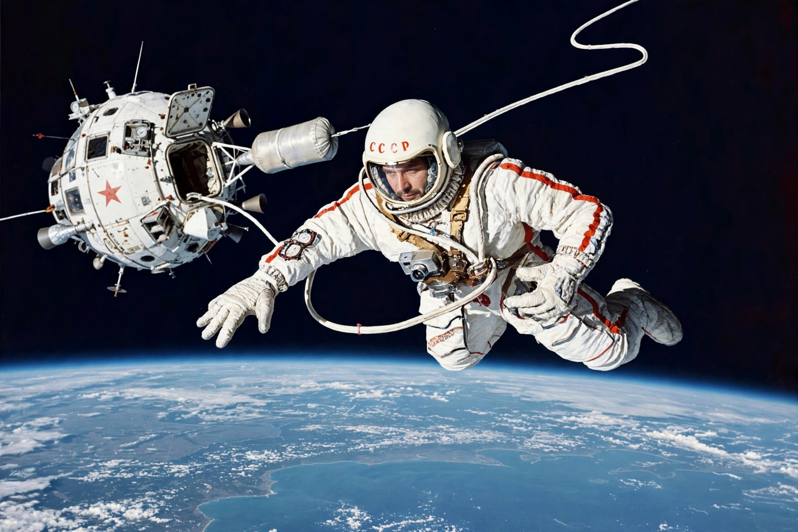

Voskhod 2
From Wikipedia, the free encyclopedia
| Voskhod 2 | |
|---|---|
| Crew | Pavel Belyayev, Alexei Leonov |
| Launch | 18 March 1965 |
| Duration | 1 day, 2 hours |
| Programme | Voskhod (USSR) |

Leonov's first spacewalk, March 1965.Voskhod 2 was a Soviet crewed space mission launched on 18 March 1965, during which Alexei Leonov became the first human to walk in space, spending about 12 minutes outside the spacecraft attached to a tether, with commander Pavel Belyayev inside. The flight was a major Soviet success in the Space Race — and very nearly a disaster.
Leonov's pressure suit ballooned in vacuum so much that he could not re-enter the inflatable airlock; he had to bleed air from the suit — risking decompression sickness — to squeeze back in. The mission's troubles continued: the airlock's jettison and an oxygen-rich cabin atmosphere worried controllers, and the automatic landing system failed.
A landing in the taiga
Belyayev flew the first manual reentry in the Soviet programme, and the capsule landed off-target in deep snow in the Ural forests, hundreds of kilometres from the intended zone. The crew spent two nights in the wilderness — fending off wolves, by their later accounts — skiing out after rescuers reached them by helicopter and cut a landing strip. The mission was the last Voskhod flight; the programme was cancelled as the USSR redirected effort to Soyuz.
See also
Alexei Leonov · Extravehicular activity · Voskhod program · Space Race